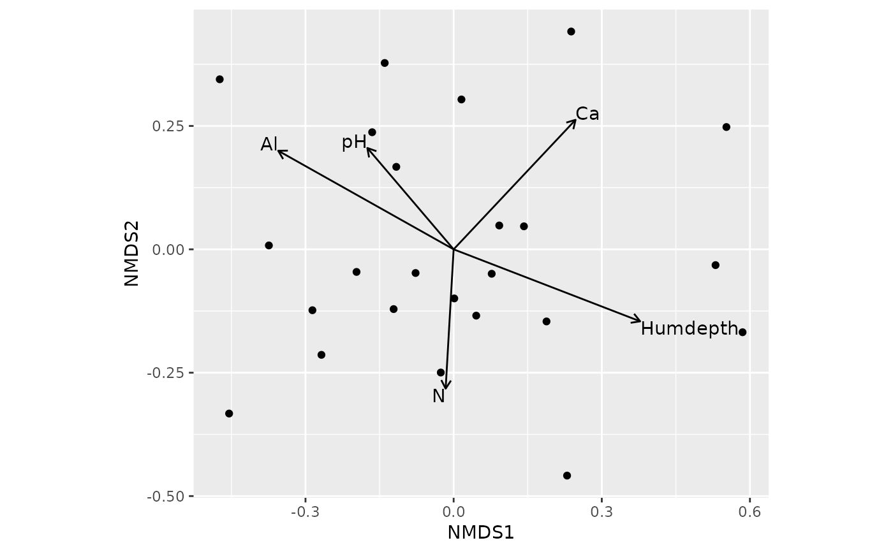
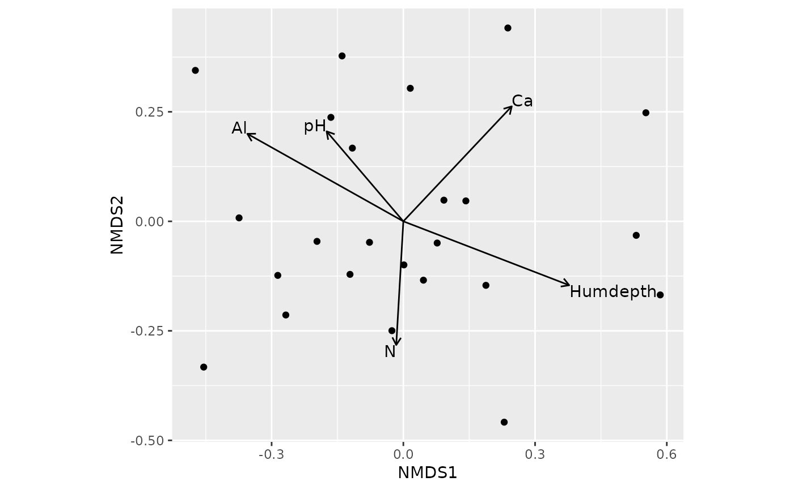

Create a ggplot Object
ordiggplot.RdFunction ordiggplot sets up an ordination graph but draws no
result. You can add new graphical elements to this plot with
geom_ordi_* function of this package, or you can use standard
ggplot2 geom_* functions and use ggscores
as their data argument.
ordiggplot(model, axes = c(1, 2), arrow.mul, ...)
ggscores(score)Arguments
- model
An ordination result object from vegan.
- axes
Two axes to be plotted
- arrow.mul
Multiplier to arrow length. If missing, the arrow length are adjusted to fit to other scores, but if some score types are not displayed, the arrows may be badly scaled, and manual adjustment can be useful.
- ...
Parameters passed to underlying functions.
- score
Ordination score to be added to the plot.
Value
Returns a ggplot object.
Details
The ggvegan package has two contrasting approaches to draw
ordination plots. The autoplot functions (e.g. autoplot.rda(),
autoplot.cca(), and autoplot.metaMDS) draw a complete plot with one
command, but the design is hard-coded in the function. However, you
can add new elements to the graph.
In contrast, function ordiggplot() only sets up an ordination
plot, and does not draw anything. It allows you to add layers to the plot
one by one with full flexibility of the ggplot2 functions.
There are some specific functions geom_ordi_*
functions that are similar as similarly named geom_*
functions. For these you need to give the type of ordination scores
to be added, and in addition, you can give any geom_*
function arguments to modify the plot. Alternatively, you can use
any ggplot2 function and in its data argument use
ggscores() function to select the data elements for the
function.
The ordiggplot() function extracts results using
fortify() functions of this package, and it accepts the
arguments of those functions. This allows setting, e.g., the
scaling of ordination axes.
Examples
library("vegan")
library("ggplot2")
data(dune, dune.env, varespec, varechem)
m <- cca(dune ~ Management + A1, dune.env)
## use geom_ordi_* functions
ordiggplot(m) + geom_ordi_axis() +
geom_ordi_point("sites") +
geom_ordi_text("species", col = "darkblue",
mapping = aes(fontface = "italic")) +
geom_ordi_label("centroids") +
geom_ordi_arrow("biplot")
 ## use ggscores + standard geom_* functions
ordiggplot(m, scaling = "sites") +
geom_point(data = ggscores("sites")) +
geom_text(data = ggscores("species"),
mapping = aes(fontface = "italic")) +
geom_label(data = ggscores("centroids"), fill = "yellow") +
geom_ordi_arrow("biplot")
## use ggscores + standard geom_* functions
ordiggplot(m, scaling = "sites") +
geom_point(data = ggscores("sites")) +
geom_text(data = ggscores("species"),
mapping = aes(fontface = "italic")) +
geom_label(data = ggscores("centroids"), fill = "yellow") +
geom_ordi_arrow("biplot")
 ## Messy arrow biplot for PCA
m <- rda(dune)
ordiggplot(m) +
geom_ordi_axis() +
geom_ordi_point("sites") +
geom_ordi_arrow("species")
## Fitted vectors, selecting variables with formula
if(requireNamespace("withr")){
m <- withr::with_seed(
seed = 1,
metaMDS(varespec, trace = FALSE)
)
## plot
ordiggplot(m) +
geom_ordi_point("sites") +
geom_ordi_arrow("sites", stat = "vectorfit", edata = varechem,
formula = ~ N + Ca + Al + Humdepth + pH)
}
#> Warning: The following aesthetics were dropped during statistical transformation: N, P,
#> K, Ca, Mg, S, Al, Fe, Mn, Zn, Mo, Baresoil, Humdepth, and pH.
#> ℹ This can happen when ggplot fails to infer the correct grouping structure in
#> the data.
#> ℹ Did you forget to specify a `group` aesthetic or to convert a numerical
#> variable into a factor?
#> Warning: The following aesthetics were dropped during statistical transformation: N, P,
#> K, Ca, Mg, S, Al, Fe, Mn, Zn, Mo, Baresoil, Humdepth, and pH.
#> ℹ This can happen when ggplot fails to infer the correct grouping structure in
#> the data.
#> ℹ Did you forget to specify a `group` aesthetic or to convert a numerical
#> variable into a factor?

## Messy arrow biplot for PCA
m <- rda(dune)
ordiggplot(m) +
geom_ordi_axis() +
geom_ordi_point("sites") +
geom_ordi_arrow("species")
## Fitted vectors, selecting variables with formula
if(requireNamespace("withr")){
m <- withr::with_seed(
seed = 1,
metaMDS(varespec, trace = FALSE)
)
## plot
ordiggplot(m) +
geom_ordi_point("sites") +
geom_ordi_arrow("sites", stat = "vectorfit", edata = varechem,
formula = ~ N + Ca + Al + Humdepth + pH)
}
#> Warning: The following aesthetics were dropped during statistical transformation: N, P,
#> K, Ca, Mg, S, Al, Fe, Mn, Zn, Mo, Baresoil, Humdepth, and pH.
#> ℹ This can happen when ggplot fails to infer the correct grouping structure in
#> the data.
#> ℹ Did you forget to specify a `group` aesthetic or to convert a numerical
#> variable into a factor?
#> Warning: The following aesthetics were dropped during statistical transformation: N, P,
#> K, Ca, Mg, S, Al, Fe, Mn, Zn, Mo, Baresoil, Humdepth, and pH.
#> ℹ This can happen when ggplot fails to infer the correct grouping structure in
#> the data.
#> ℹ Did you forget to specify a `group` aesthetic or to convert a numerical
#> variable into a factor?
